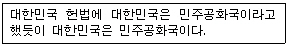
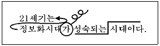
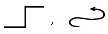
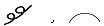
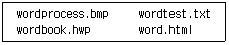
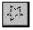
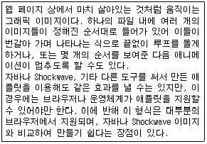
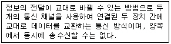

워드프로세서-2급(폐지) (2004-05-30 기출문제)
1과목: 워드프로세서 용어 및 기능
1. 다음 중 글자모양 지정에 해당하지 않는 것은?
- 글자색
- 글꼴
- 글자 크기
- 들여쓰기
(정답률: 92%)

2. 문서는 어떤 수단을 이용하여 발신함을 기본 원칙으로 하는가?
- 인편
- 정보통신망
- 우편
- 모사전송
(정답률: 90%)
3. 다음 중 문서의 삽입, 삭제, 수정에 대한 설명으로 옳지 않은 것은?
- '삽입' 상태에서 새로운 내용을 입력하면 원래의 내용은 뒤로 밀려난다.
- 임의의 내용을 블록(영역) 지정한 후 'Delete'키를 누르면 해당 내용이 삭제된다.
- '상공회의소' 단어의 '회'자 앞에 커서를 두고 'Delete'키를 한 번 누르면 '상공 의소'가 된다.
- 그림을 삭제할 때에도 지우고 싶은 그림을 선택한 후 'Delete'키를 누른다.
(정답률: 81%)
4. 저장하기(Save) 명령이 실행될 때 가장 적절한 의미는?
- 보조기억장치에 있는 내용을 주기억장치에 저장한다.
- 주기억장치에 있는 내용을 보조기억장치에 저장한다.
- 중앙처리장치에 있는 내용이 주기억장치에 저장된다.
- 중앙처리장치에 있는 내용이 보조기억장치에 저장된다.
(정답률: 73%)
5. 다음의 보기와 같이 자주 나오는 '대한민국'이란 단어를 빠르게 입력하기 위해 사용하는 기능으로 가장 적절한 것은?

- 스타일
- 상용구
- 글자겹침
- 메일머지
(정답률: 88%)
6. 다음 화면 표시 방식 중 그래픽 방식과 가장 관련이 없는 것은?
- 글꼴이 다양하다.
- 확대 또는 축소한 문자 그대로 화면에 표시된다.
- 텍스트 방식에 비해 인쇄 속도가 빠르다.
- 텍스트 방식에 비해 문자 및 그림 편집이 편리하며 기억장소를 많이 사용한다.
(정답률: 67%)
7. 다음은 같은 종류의 파일을 의미하는 확장자를 나열한 것이다. 같은 종류의 파일이 아닌 것은?
- BMP, WMF, GIF
- WAV, MID, MP3
- COM, EXE, BAK
- LZH, RAR, ARJ
(정답률: 56%)
8. 다음 중 블록이 설정되어 있는 상태에서 붙여넣기를 하였다. 어떤 결과가 나타나는가?
- 블록의 내용에 영향을 주지 않고 버퍼에 있는 내용이 추가된다.
- 블록이 잡혀 있으므로 붙여넣기가 되질 않는다.
- 블록의 내용이 지워지고 그 위치에 버퍼의 내용이 삽입된다.
- 블록의 내용이 두번 붙여넣기가 된다.
(정답률: 77%)
9. 다음 중 워드프로세서에서 커서의 이동에 사용되지 않는 키는?
- [Enter]
- [Caps Lock]
- [Page Down]
- [Tab]
(정답률: 88%)
10. 다음 중에서 전자문서의 효력 발생시기는 언제인가?
- 출력후 등기로 수신자에게 도달되었을 때
- 수신자의 컴퓨터 파일에 기록되었을 때
- 발신자가 발송을 하였을 때
- 전자이미지 서명을 하였을 때
(정답률: 80%)
11. 다음 중 행두금칙 문자로 알맞은 것은?
- [
- ?
- <
- #
(정답률: 88%)
12. 다음 중 문서의 인쇄에 대하여 설명한 것으로 옳지 않은 것은?
- 문서의 특정 쪽을 지정하여 인쇄할 수 있다.
- 여러 개의 프린터가 설치된 경우 특정 프린터를 선택하여 인쇄할 수 있다.
- 인쇄 대화상자에서 문단의 정렬 방식을 변경할 수 있다.
- 인쇄 부수를 지정하여 한 번의 명령으로 동일한 문서를 여러 번 인쇄할 수 있다.
(정답률: 73%)
13. 다음 중 성적표 또는 주소록 정리시에 가나다 순서나 알파벳 순서 또는 역순으로 재 배열하고 싶을 때 사용할 수 있는 기능으로 알맞은 것은?
- 소트(Sort)
- 래그드(Ragged)
- 치환(Replace)
- 검색(Search)
(정답률: 84%)
14. 다음 중 치환(바꾸기) 기능으로 할 수 없는 것은?
- 한글을 특수문자로 바꾸기
- 표를 문자열로 바꾸기
- 영문 대,소문자를 구별하여 바꾸기
- 한자를 영문자로 바꾸기
(정답률: 80%)
15. 다음 중 클립보드를 이용한 작업에 대한 설명으로 옳지 않은 것은?
- 클립보드는 어플리케이션 혹은 문서간의 데이터 교환을 위한 중간적인 매개 역할을 수행한다.
- 복사하거나 잘라내기하여 다른 곳에 붙이는 경우 원래의 문서에는 아무런 변화가 생기지 않는다.
- [PrtSc]키를 눌러 화면 전체를 캡쳐하여 클립보드에 저장한 후 특정 문서에 붙여넣을 수 있다.
- 스프레드시트나 그래픽 프로그램에서 클립보드에 저장한 내용도 특정 워드프로세서를 이용한 문서에 붙일 수 있다.
(정답률: 63%)
16. 다음 중에서 토글(Toggle) 키로만 짝지어진 것은?
- [F1], [Enter]
- [Esc], [Caps Lock]
- [Caps Lock], [Insert]
- [Page Down], [Shift]
(정답률: 92%)
17. 다음 중 매크로(Macro)에 대한 설명으로 가장 적합한 것은?
- 특정 문자열을 삭제하는 기능
- 특정문자를 찾아 새로운 문자로 바꾸는 기능
- 특정문자를 찾는 기능
- 반복되는 키보드의 동작을 특정키에 기억시켜 재생하는 기능
(정답률: 75%)
18. 워드프로세서에서 마우스의 기능이 아닌 것은?
- 문자의 입력
- 커서의 이동
- 명령의 실행
- 영역의 지정
(정답률: 87%)
19. 다음 보기와 같이 교정부호를 사용하였을 경우의 결과로 옳은 것은?

- 21세기는 정보화시대 성숙되는
시대이다. - 21세기는
정보화시대가 성숙되는 시대이다. - 21세기는 정보화시대 시대이다. 성숙되는
- 21세기는 정보화시대가 성숙되는 시대이다.
(정답률: 83%)
20. 다음 중 서로 상반되는 의미를 나타내는 교정부호끼리 올바르게 짝지어진 것은?


(정답률: 90%)
2과목: PC 운영 체제
21. 다음 중 한글 Windows 98의 [작업 표시줄 등록정보] 창에 있는 [시작 메뉴 프로그램] 탭에서 설정할 수 있는 기능에 해당되지 않는 것은?
- 시작 메뉴에 프로그램 추가/제거
- 시작 메뉴 고급 편집
- 문서 메뉴의 목록 지우기
- 작업 표시줄의 시계 표시 삭제
(정답률: 56%)
22. 한글 Windows 98에서 제공되는 [도움말]과 관련된 설명으로 옳지 않은 것은?
- [도움말]의 내용은 프린터로 인쇄할 수 없기 때문에 화면으로만 이용한다.
- 분류 항목별로 찾아보려면 [목차] 탭을 이용한다.
- 색인 항목의 목록을 이용하려면 [색인] 탭을 선택한다.
- [도움말]에 포함된 키워드나 구문으로 검색하려면 [검색] 탭을 이용한다.
(정답률: 65%)
23. 다음 중 한글 Windows 98에서 바탕 화면의 바로 가기 메뉴를 이용하여 할 수 없는 작업은?
- 아이콘에 대한 정렬
- 작업 표시줄 표시 설정
- 바로 가기 만들기
- 새 폴더 만들기
(정답률: 63%)
24. 한글 Windows 98에서 사용하는 폴더의 바로 가기 메뉴에 관한 설명으로 옳지 않은 것은?
- 폴더의 바로 가기 메뉴를 이용하여 새 폴더를 만들 수 있다.
- 폴더의 바로 가기 메뉴를 이용하여 폴더의 이름을 바꿀 수 있다.
- 폴더의 바로 가기 메뉴를 이용하여 폴더를 삭제할 수 있다.
- 폴더의 바로 가기 메뉴를 이용하여 폴더의 공유를 설정할 수 있다.
(정답률: 40%)
25. 한글 Windows 98에서 응답하지 않는 프로그램을 종료하기 위하여 [Ctrl]+[Alt]+[Del] 키를 눌렀을때 나타나는 [프로그램 종료] 대화 상자에서 선택할 수 있는 항목이 아닌 것은?
- 작업 종료
- 대기
- 시스템 종료
- 취소
(정답률: 62%)
26. 한글 Windows 98의 시스템 도구에 있는 [디스크 검사]를 표준검사로 실행하였을 때 화면에 나타나는 결과 항목이 아닌 것은?
- 불량 섹터 크기
- 디스크의 파티션의 수와 크기
- 숨겨진 파일과 사용자 파일 수와 크기
- 전체 디스크 크기
(정답률: 46%)
27. 다음 중 한글 Windows 98에서 시스템의 속도를 개선하는 방법으로 가장 적절한 것은?
- 응용 프로그램을 가급적 많이 실행한다.
- 바탕 화면의 해상도를 높여서 사용한다.
- 디스크 공간 늘림을 실행한다.
- 디스크 조각 모음을 정기적으로 실행한다.
(정답률: 72%)
28. 다음 중 한글 Windows 98의 [그림판] 프로그램에서 열기를 할 수 있는 파일 형식을 모두 열거한 것은?
- BMP
- BMP, GIF
- BMP, JPEG
- BMP, JPEG, GIF
(정답률: 64%)
29. 다음 중 한글 Windows 98에서 기본 프린터의 설정에 관한 설명으로 옳은 것은?
- 여러 프린터가 설치되어 있을 때 기본 프린터의 변경이 가능하다.
- 기본 프린터로 설정되면 공유가 불가능하다.
- 기본 프린터를 삭제하면 휴지통에 임시 보관되며 복원할 수 있다.
- 기본 프린터의 이름을 변경하는 것은 불가능하다.
(정답률: 53%)
30. 한글 Windows 98의 [찾기] 대화상자에서 아래에 기술된 파일만 한꺼번에 검색하려고 한다. 가장 좋은 파일 이름의 조건은?

- bmp, txt, hwp, html
- ?.*
- word?.*
- word*.*
(정답률: 59%)
31. 한글 Windows 98에서 서로 다른 두 드라이브 간에 비실행 파일을 복사하지 않고 이동시키기 위하여, 마우스의 왼쪽 버튼으로 끌어놓기(Drag & Drop)기능을 사용할 때 같이 사용해야 하는 키는?
- [Ctrl] 키
- [Alt] 키
- [Shift] 키
- [Tab] 키
(정답률: 69%)
32. 다음 중 한글 Windows 98에서 임의의 폴더를 네트워크 상에서 공유하려고 할 때, 해당 폴더의 등록정보 창에서 공유와 관련하여 설정할 수 있는 내용이 아닌 것은?
- 공유 이름 설정
- 사용 권한 설정
- 공유 대상 검색 기능 설정
- 암호 설정
(정답률: 46%)
33. 다음 중 한글 Windows 98의 [탐색기]에서 파일을 삭제하는 방법으로 옳지 않은 것은?
- 삭제하고자 하는 파일을 선택한 후에 [Delete] 키를 누른다.
- 삭제하고자 하는 파일을 선택한 후에 [Shift]+[Del]키를 누른다.
- 삭제하고자 하는 파일을 선택한 후에 [Ctrl]+[Del]키를 누른다.
- 삭제하고자 하는 파일을 선택한 후에 바로 가기 메뉴에서 [삭제]를 선택한다.
(정답률: 68%)
34. 한글 Windows 98에서 임의의 폴더 내에 있는 특정 파일을 [Shift] 키와 [Ctrl] 키를 동시에 누른 채 바탕화면으로 드래그 앤 드롭하면 어떤 일이 생기는가?
- 해당 파일이 삭제된다.
- 해당 파일의 이름 바꾸기를 할 수 있다.
- 해당 파일의 등록정보 상자가 나타난다.
- 해당 파일의 바로 가기 아이콘을 만들 수 있는 바로 가기 메뉴가 나타난다.
(정답률: 75%)
35. 한글 Windows 98의 [제어판]에 있는 [내게 필요한 옵션 등록정보] 창의 [키보드] 탭에서 [Num Lock], [Scroll Lock], [Caps Lock] 키를 누를 때마다 신호음을 들을 수 있게 설정하는 항목은?
- 고정키 설정
- 필터키 설정
- 반복키 설정
- 전환키 설정
(정답률: 56%)
36. 다음 중 한글 Windows 98의 네트워크 설정에서 DNS 서버 설정에 대한 설명으로 옳지 않은 것은?
- [제어판]의 [네트워크]를 이용하여 설정할 수 있다.
- [TCP/IP 등록정보] 창의 DNS 구성 탭에서 DNS 서버 주소를 입력한다.
- 추가되는 DNS 서버는 하나만 존재해야 한다.
- DNS 서버란 사람이 사용하기 쉬운 도메인명을 컴퓨터가 이해할 수 있는 IP 주소로 바꿔주는 컴퓨터이다.
(정답률: 67%)
37. 한글 Windows 98에서 볼 수 있는 일반적인 대화상자에서 입력이나 설정을 하기 위하여 항목의 이동에 사용되는 키는 무엇인가?
- [Tab]
- [Esc]
- [F4]
- [Alt]
(정답률: 74%)
38. 한글 Windows 98에서 바탕 화면의 글자 모양, 크기, 글자색 등을 변경하려면, [디스플레이 등록정보] 창에서 어떤 탭을 선택해야 하는가?
- 화면 보호기
- 화면 배색
- 효과
- 설정
(정답률: 63%)
39. 한글 Windows 98에서 [제어판]에 있는 [프로그램 추가/제거]의 등록정보 대화상자에서 할 수 없는 것은?
- 시스템 등록정보 보기
- Windows 구성요소 제거
- 시동 디스크 작성
- 응용 프로그램 설치
(정답률: 36%)
40. 한글 Windows 98의 [보조 프로그램]에 있는 [그림판]의 도구 중에서

이 하는 기능은 다음 중 무엇인가?- 곡선을 그린다.
- 자유로운 선을 그려낸다.
- 그림을 지운다.
- 원하는 부분을 자유롭게 선택한다.
(정답률: 57%)
3과목: PC 기본 상식
41. 다음 중 네트워크를 규모가 작은 것에서 큰 순서대로 올바르게 나열한 것은?
- LAN < MAN < WAN
- MAN < WAN < LAN
- LAN < WAN < MAN
- MAN < LAN < WAN
(정답률: 84%)
42. 다음 중 컴퓨터 기억소자의 발달과정을 순서대로 올바르게 나열한 것은?
- 진공관 → 트랜지스터 → LSI → VLSI → 집적(IC)회로
- 트랜지스터 → 진공관 → 집적(IC)회로 → VLSI → LSI
- 트랜지스터 → 집적(IC)회로 → LSI → VLSI → 진공관
- 진공관 → 트랜지스터 → 집적(IC)회로 → LSI → VLSI
(정답률: 71%)
43. 다음 중 하드웨어적 업그레이드 대상이라고 할 수 없는 것은?
- 메모리 증설
- 그래픽 카드 교체
- Linux 사용
- CPU 교체
(정답률: 66%)
44. 다음 중 네트워크의 통로를 단일화하여 외부로부터의 불법 침입을 막고 접근 통제 대책을 실시하는 시스템은?
- 방화벽
- 도메인 네임 서버
- 파일서버
- 라우터
(정답률: 88%)
45. 다음 중 부가가치통신망을 의미하는 약어는?
- LAN
- VAN
- WAN
- SAN
(정답률: 79%)
46. 다음 중 작성한 프로그램의 오류를 찾아서 수정하는 작업을 무엇이라고 하는가?
- 컴파일링(Compiling)
- 디버깅(Debugging)
- 링킹(Linking)
- 로딩(Loading)
(정답률: 68%)
47. 다음 중 하드디스크를 파티션(Partition)할 때 사용하는 명령은?
- FORMAT
- FDISK
- MAKE
- INSTALL
(정답률: 63%)
48. 다음 중 CPU 내에 위치하는 조합회로로써 실제로 사칙연산과 논리연산 등을 수행하는 장치는?
- 부호기
- 명령 해독기
- ALU
- 명령 레지스터
(정답률: 50%)
49. 다음 중 컴퓨터를 분류하는 방법으로 옳지 않은 것은?
- 컴퓨터의 모양에 따른 분류
- 처리하는 데이터의 형태에 의한 분류
- 사용 목적에 따른 분류
- 컴퓨터 규모에 따른 분류
(정답률: 73%)
50. 문자, 음성, 영상 등의 멀티미디어 콘텐츠를 통합·편집하여 새로운 멀티미디어 정보를 만들어주는 프로그램을 멀티미디어 저작도구라고 한다. 다음 중 멀티미디어 저작도구로 적절하지 않은 것은?
- 툴북
- 오쏘웨어
- 디렉터
- 포토샵
(정답률: 66%)
51. 다음 중 멀티미디어 데이터를 처리하기 위한 소프트웨어에 속하지 않는 것은?
- 이미지 편집 프로그램
- 음악 저작 프로그램
- FTP 파일 전송 프로그램
- 동영상 편집 프로그램
(정답률: 77%)
52. 다음 중 멀티미디어 타이틀 제작과정을 순서대로 올바르게 나열한 것은?
- 자료수집 및 작성 → 계획 → 설계 → 저작 → 테스트 → 제품화
- 계획 → 설계 → 자료수집 및 작성 → 저작 → 테스트 → 제품화
- 설계 → 계획 → 저작 → 자료수집 및 작성 → 테스트 → 제품화
- 자료수집 및 작성 → 설계 → 계획 → 저작 → 테스트 → 제품화
(정답률: 69%)
53. 다음 중 전원이 공급되지 않아도 내용이 지워지지 않아서 디지털카메라의 보조 저장장치로 사용되는 기억장치는 어느 것인가?
- DRAM
- SRAM
- Flash Memory
- ROM
(정답률: 69%)
54. 초고속 정보 통신망을 이용하여 원거리에 있는 사람들과 비디오와 오디오를 통해 회의할 수 있도록 하는 시스템은 무엇인가?
- VOD
- RACS
- VCS
- VDT
(정답률: 73%)
55. 기계어 프로그램을 주기억장치로 읽어 들여 실행 가능하도록 해주는 시스템 소프트웨어는?
- 디버거(Debugger)
- 컴파일러(Compiler)
- 인터프리터 (Interpreter)
- 로더(Loader)
(정답률: 63%)
56. 다음에 실행될 명령의 주소를 저장하고 있는 레지스터는 어느 것인가?
- 명령 레지스터
- 프로그램 카운터
- 인덱스 레지스터
- 누산기
(정답률: 43%)
57. 다음 보기의 내용은 무엇을 설명한 것인가?

- animated GIF
- Holography
- TIFF
- QuickTime
(정답률: 71%)
58. 다음은 전송 방향에 따른 여러 통신 방식 중에서 어느 방식을 설명한 것인가?

- 단방향(Simplex) 통신 방식
- 반이중(Half Duplex)통신 방식
- 전이중(Full Duplex) 통신 방식
- 이이중(Double Duplex) 통신 방식
(정답률: 69%)
59. 다음 중 컴퓨터 바이러스에 대한 대비 방법으로 가장 거리가 먼 것은?
- 출처가 불분명한 프로그램을 사용하지 않는다.
- 의심스러운 전자메일은 열어보지 않는다.
- 백신 프로그램으로 정기검사를 하고 미리 예방한다.
- 다른 컴퓨터에 침입하는 해킹방법을 배워 둔다.
(정답률: 87%)
60. 다음의 어셈블리(Assembly) 언어에 대한 설명 중 올바르지 않은 것은?
- 기계어에 프로그래머가 이해하기 쉽도록 연상 기호(Mnemonic)를 부여한 언어이다.
- 일반 프로그래머 보다는 시스템 프로그래머가 주로 사용하는 언어이다.
- 고급 언어보다 수행 속도 면에서 빠르다.
- 고급 언어 보다 프로그래밍 하기가 쉽다.
(정답률: 54%)